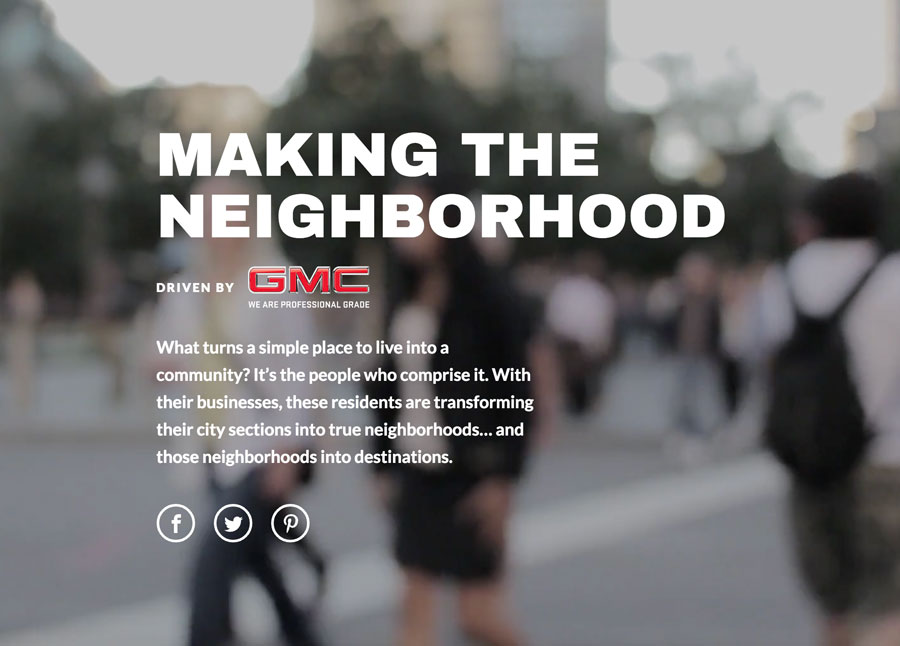
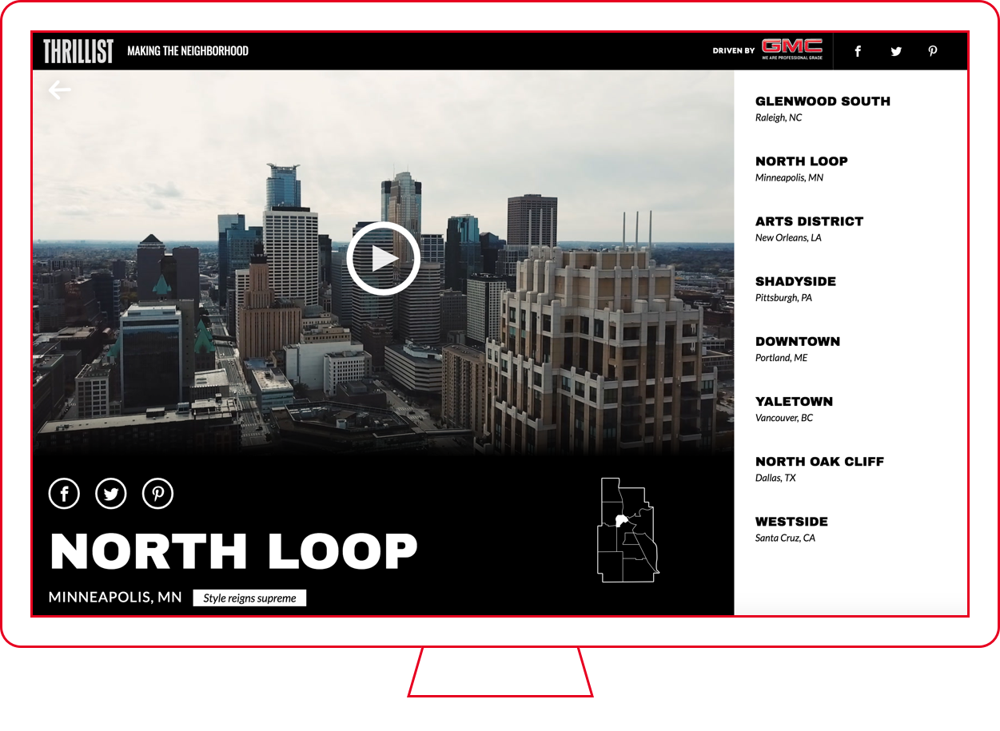
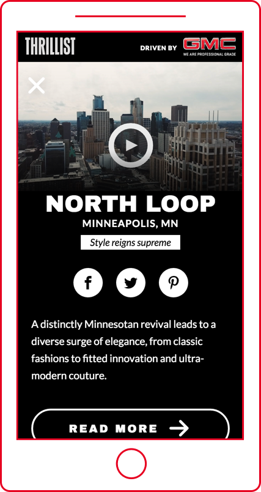
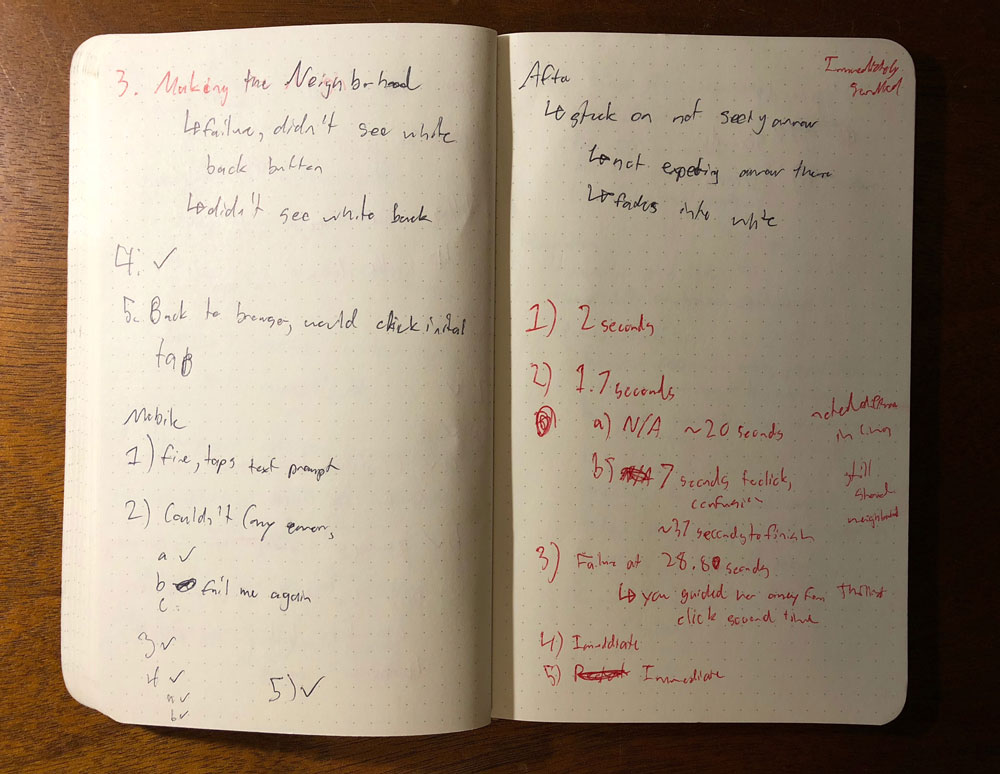
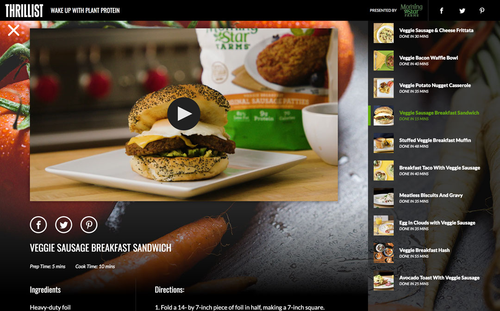
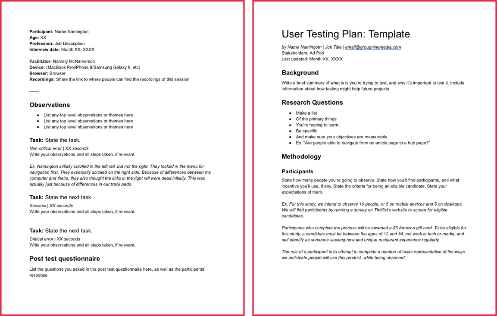

BACK

BACK


The Problem
A lean team wanted to reuse past work, but wasn’t sure where it was successful and where it failed.
The Outcome
Insights from user testing, and a series of documents and resources to help others test on their own.
The Process
Plan, Recruit, Test, Learn, Iterate
I spent a large chunk of my time at Group Nine working for their cross-functional ad pod, consisting of a developer, two designers and a product manager.
Together, our lean group worked with editorial teams to create custom content on behalf of advertising partners.
It was evident early on that to make our tiny crew efficient, we’d have to figure out where we could templatize and reuse work. So everything I did, I did keeping in mind the variety of content types that might wind up living in a template in the future.
When our team had work, it was difficult to bake time into our workflow for user testing. Our deadlines were tight and often involved lots of back and forth with clients.
But when we had down time, it was the perfect opportunity to find ways to improve what we’d done before.
The Breakdown
Advertisers wanted us to create content hubs to house the work our editorial teams created.
We designed the hubs to be destinations themselves, offering snapshots of the content before users drilled deeper.
But we didn’t know how users react to these somewhat unconventional designs, or how people might use the new formats.
We wound up creating a series of snapshots with snippets of information pulled from the stories themselves.
In the case of GMC’s “Making the Neighborhood” campaign, each snapshot featured:
- a neighborhood’s name
- a tagline
- a short description
- a map
- video, if available


A neighborhood page in the "Making the Neighborhood" campaign. We wanted each page to feel valuable even if users didn't drill deeper into the content.
Each also linked out to a story page where a user could read more.
We designed the hub to be able to expand or contract as necessary, depending on the amount of content we wanted to place in it, and thus hoped we’d be able to reuse the format for future campaigns.
After the project launched, found ourselves with a small amount of time, and we seized the opportunity to view where its successes were, and its failures.
The Test
I performed 10 user tests – 5 on mobile devices, and 5 on desktops. I tried to let participants use their own devices, where possible.
I administered each test in person, and each consisted of 11 or 12 steps depending on the device. I recorded particpants during their sessions.
Participants were 18-55 years old – encompassing the campaign’s target audience and then some. They explicitly did not work in media, and they came from diverse backgrounds.
From these tests, I was able to discern some recurring or interesting themes and use them to recommend improvements to the template.
The back arrow needed love
A back arrow on neighborhood pages allowed users to return to the main screen – if users could see it. The arrow was white, and blended in with some backgrounds, making it difficult to notice.
This also uncovered a more critical failure. Users tried to tap the name of the campaign in the navbar to return home, but the name was not a link. This wound up being a pretty obvious issue that we’d overlooked because we’d inherited the style and function of the navbar from others’ work.
The Takeaway: We needed to make the back button more visible, but more importantly, to make the campaign name actionable to adhere to standard navigational conventions.
People Wouldn't Use Share Buttons
When asked to share a page on Facebook, Twitter, or Pinterest, most users copied the link from the navbar and pasted it into a new post manually, ignoring the social share buttons on the individual pages altogether. Some users stated this is because they hate the social platforms’ integrations when sharing.
The Takeaway: We could experiment with giving social buttons less prominence.

My chicken scratch handwriting. I take notes on paper when I'm the only person conducting a user test to avoid seeming distracted by a computer or phone. I note the time of an interesting observation, too, so I can revisit it on a recording later.
Hub-to-Article Navigation Was Rough
As mentioned before, this page was a hub for content, and clicking “Read More” allowed users to visit a full article featuring a neighborhood. Because of the limitations of our tech at the time, we were hesitant to unearth all of a story in the hub itself. This meant sending users to a new page, hosted on Thrillist and styled differently than its landing page.
Users said navigating from the hub to an article page was jarring, because of the drastic difference in design.
We also had the articles load in new tabs to keep the hub open in an attempt to get users to engage with it again. We learned this confused users, as they tried to use the back arrow to navigate back to the hub. This was particularly tricky on mobile devices, where tabs are less visible and more difficult to navigate between.
The Takeaway: If and where possible, we needed to contain all content to the hubs themselves. And if we couldn’t, we needed to add in-article opportunities to navigate back to a hub.
Inconsistent Imagery Confused People
Participants voiced confusion or even frustration when they clicked the thumbnail in the right rail and couldn't see a larger version of it on the neighborhood page. It wasn't immediately obvious to them how the thumbnail was relevant to the neighborhood.
The Takeaway: Imagery should have obvious relevance where possible.
With this knowledge, we refined the template for our next campaign, “Wake Up With Plant Protein” with Morningstar Farms.
The Results
We made the campaign name in the navbar clickable, made the back arrow an X and made sure it stood out against the background image.
The campaign featured recipes, and we hosted each recipe in full on the hub itself instead of linking to them in separate article pages.
The food thumbnails in the right rail could be viewed larger when the user navigated to that recipe page.

The Morningstar campaign is structurally similar to the GMC campaign, with a few tweaks to improve navigability and a significant overhaul to the look and feel.
Throughout this process, I was cognizant of my need to repeat it for future campaigns. I was also aware of my need to teach my peers how to perform user testing, so they could conduct tests solo or so we could divide and conquer.
Because of this, I iterated on the process itself. I listened to my own recordings and took note of ways I could improve.

I made templates to streamline my workflow and to offer as resources to my peers who were hoping to conduct user tests for their work.
I also templatized my work. I created a checklist to help myself get off the ground, reminding me of the steps necessary to perform user tests. I created templates for test plans, question-and-answer sheets, post-test questionnaires, PowerPoint templates for sharing findings.
I invited peers to observe as notetakers for future tests, using this as an opportunity to teach them how to conduct user tests.
I learned recently that since I left Group Nine, people have continued to use my templates and to lean on what they learned while conducting research with me.
Conclusion
My work doing user testing at Group Nine yielded not just better results for our brand partners and our users, but also laid the groundwork for my peers to conduct research themselves.
In doing my best to lower the barriers to doing testing, I hope I created a culture of curiosity and gave people the tools necessary to find answers.
Strategy
Designing a new ad unit
From research to prototyping to testing, how I created an experimental ad unit that performs 5 times better than standard banners.
Learn More 
Design
Building a new tool from scratch
When my company needed a new media management tool, I helped create something valuable for 6 teams.
Learn More